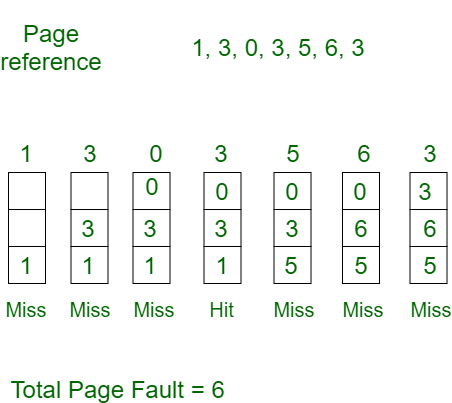

Theory
This is the simplest page replacement algorithm. In this algorithm, operating system keeps track of all pages in the memory in a queue, oldest page is in the front of the queue. When a page needs to be replaced page in the front of the queue is selected for removal.
The main advantage of the FIFO page replacement algorithm is its simplicity. It is easy to understand and implement. It also uses a queue data structure. The number of operations is limited in a queue makes the implementation simple.
Advantages of FIFO
- The main advantage of the FIFO page replacement algorithm is its simplicity. It is easy to understand and implement.
- It also uses a queue data structure. The number of operations is limited in a queue makes the implementation simple.
Disadvantages of FIFO
- When the number of incoming pages is large, it might not provide excellent performance.
- When we increase the number of frames or capacity to store pages in the queue, it should give us less number of page faults. Sometimes FIFO may behave abnormally, and it may increase the number of page faults. This behavior of FIFO is called Belady's anomaly.
- In FIFO, the system should keep track of all the frames. Sometimes it results in slow process execution.
Example
- Initially all slots are empty, so when 1, 3, 0 came they are allocated to the empty slots —> 3 Page Faults.
- When 3 comes, it is already in memory so —> 0 Page Faults.
- Then 5 comes, it is not available in memory so it replaces the oldest page slot i.e 1. —>1 Page Fault.
- 6 comes, it is also not available in memory so it replaces the oldest page slot i.e 3 —>1 Page Fault.
- Finally when 3 come it is not available so it replaces 0 1 page fault